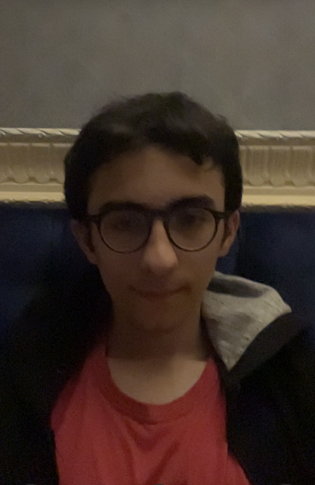

Rafael Hasanov

Summary
I am a second year Computer Science in Constructor University Bremen
Experienced in C/C++, MySQL, HTML/CSS ,Python and JavaScript
Education
- Bachelor of Biotechnology, Baku State University (2021-2025)
- Bachelor of Computer Science, Constructor University Bremen (2023-2026)
Work Experience
Skills
- Communication skills : ☆☆☆☆
- Organizational skills : ☆☆☆☆☆
- Language skills :
- English : fluent (C1)
- Russian : native (C2)
- German : upper-intermediate (B2)
- Azerbaijan : native (C2)
- Turkish : lower-intermediate (A2)
- Spanish : beginner (A1)
- Leadership skills : ☆☆☆☆
Certificates
- Language
- IELTS 7.5/9
- SAT 1460/1600
- Goethe B2
- 1st place English olympiad middle school
- Project of the year about Mitochondrias in Baku State University
- Winner of Jeopardy tournament in an Azerbaijan TV show
Other
© Rafael Hasanov. All rights reserved.